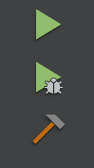
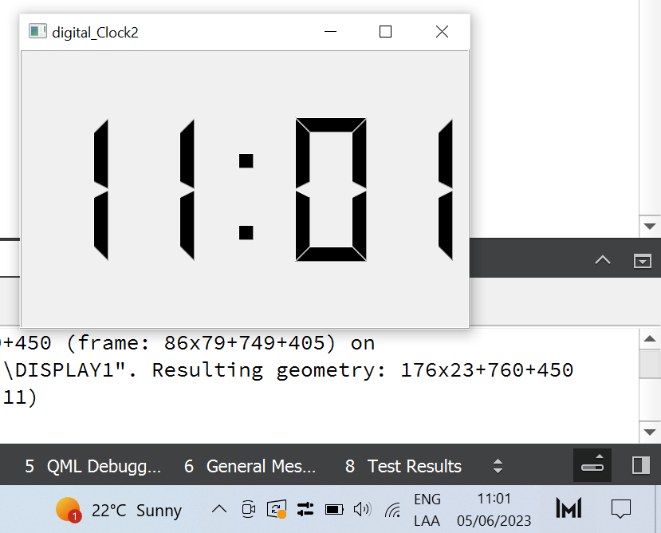

QtCreator es un entorno de desarrollo integrado (IDE) que ofrece una amplia gama de herramientas para la creación de aplicaciones gráficas y de interfaz de usuario. Es altamente versátil y fácil de usar, permitiendo a los usuarios crear y desarrollar programas de geometría computacional de manera eficiente. Con QtCreator, los usuarios podrán aprovechar una interfaz intuitiva y herramientas de depuración avanzadas, lo que les permitirá construir y visualizar geometría compleja de manera rápida y precisa.
Instalación y configuración de QtCreator
Instalación y Configuración de QtCreator: Guía Paso a Paso A continuación, te presentaré una detallada guía para la instalación y configuración del software QtCreator, utilizando la propia documentación y guía de instalación proporcionada por el programa.
-
Paso 1: Descarga del software
Dirígete al sitio web oficial de QtCreator (www.qt.io) y busca la sección de descargas. Asegúrate de seleccionar la versión compatible con tu sistema operativo. Descarga el instalador correspondiente y guárdalo en una ubicación accesible en tu computadora. -
Paso 2: Ejecutar el instalador
Una vez que se haya completado la descarga, localiza el archivo de instalación y ejecútalo haciendo doble clic en él. Se abrirá el asistente de instalación de QtCreator. -
Paso 3: Configuración del instalador
El asistente de instalación te guiará a través de diferentes opciones y configuraciones. Lee cuidadosamente cada paso y elige las opciones que mejor se adapten a tus necesidades. Asegúrate de seleccionar los componentes relevantes para la geometría computacional y la física. -
Paso 4: Ubicación de instalación
En este paso, se te solicitará que selecciones la ubicación de instalación de QtCreator en tu sistema. Puedes optar por la ubicación predeterminada o elegir una ruta personalizada. Selecciona la opción que prefieras y continúa con la instalación. -
Paso 5: Configuración adicional
Durante la instalación, es posible que se te soliciten otras configuraciones opcionales, como la integración con otros programas o la configuración del entorno de desarrollo. Sigue las instrucciones y configura estas opciones según tus preferencias. -
Paso 6: Finalización de la instalación
Una vez que hayas completado todas las configuraciones y opciones, el instalador comenzará a instalar QtCreator en tu sistema. Esto puede llevar algún tiempo, dependiendo de la velocidad de tu computadora. - Paso 7: Configuración inicial de QtCreator Una vez que la instalación se haya completado con éxito, ejecuta QtCreator desde el menú de inicio o el acceso directo en tu escritorio. En la primera ejecución, se te solicitará que realices algunas configuraciones iniciales, como la selección del kit de compilación y la configuración del perfil de usuario. Sigue las instrucciones proporcionadas y configura estos aspectos según tus preferencias y entorno de desarrollo.
Introducción a QT Creator
En esta sección se explicará las formas en las que podemos agregar SIGNAL y SLOT
Forma 1: Agregando SIGNAL y SLOT desde Design
Tenemos un proyecto ya creado que nombramos boton1. Una vez creado nos vamos a la carpeta llamada Forms y le damos doble clic al archivo mainwindows.ui
Ahora nos vamos a la parte Design y en la parte izquierda podremos observar diferentes objetos que podemos insertar en la parte central de nuestra ventana. En este caso arrastraremos un Push Button
En la parte baja de la ventana, tendremos la parte para añadir SIGNAL y SLOT
Y hay 4 partes que son Sender, Signal, Receiver, Slot.
Sender: Será el que envie la señal y que objeto será.
Signal: Muestra qué tipo de señal será mandada por el sender.
Receiver: El objeto que recibirá la señal.
Slot: Que hará el objeto que recibió la señal
Finalmente guadaremos y correremos el boton de Run  para poder observar nuestro trabajo
Le damos clic y se cerrará ya que le dimos el Slot de close que cierra objetos
Forma 2: Signal y Slot por código
Ahora seguiremos todos los pasos de ejemplo anterior hasta la parte de haber puesto el objeto de ventana
Despues nos vamos hacia la parte izquierda y le damos clic en edit para asi poder seleccionar el archivo mainwindow.cpp que se encuentra en la carpeta Source.
Debajo de la línea ui->setup(this); */línea 8*/ pondremos el siguiente comando conect() que
recibe 4 parámetros como argumentos que son sender, signal, receiver y slot.
Sender: Será el que envie la señal y que objeto será.
Signal: Muestra qué tipo de señal será mandada por el sender.
Receiver: El objeto que recibirá la señal.
Slot: Que hará el objeto que recibió la señal
Ahora ejecutaremos el proyecto en el mismo botón. Y si le damos clic al botón con texto salida se cerrará la ventana
Forma 3:Creando un elemento por código
Una vez creado nuestro proyecto nos vamos a la carpte de headers y abrimos el archivo de mainwindow.cpp y en private definimos el elemento QPushButton que es un apuntador. Además llamanos en la parte de arriba la librería para poder usar el objeto QPushButton
Ahora nos vamos a nuestro archivo mainwindow.cpp que se encuentra en la capeta Sources
Y usaremos la función conect en cual le mandaremos como argumento estos parámetros
Sender: Será el que envie la señal y que objeto será.
Signal: Muestra qué tipo de señal será mandada por el sender.
Receiver: El objeto que recibirá la señal.
Slot: Que hará el objeto que recibió la señal
Ahora ejecutaremos el proyecto en el mismo botón. Y si le damos clic al botón con texto salida se cerrará la ventana
Forma 4: Creando métodos
Añadimos un botón como en la primera forma que se menciona. Hiremos a nuestra carpeta Forms y abriremos nuestro archivo mainwindow.ui

Y arrastraremos un PushButtom hacia nuestra ventana de edición
Ahora nos vamos a nuestro archivo mainwindows.h que se encuentra en la carpeta Headers Declaramos un slot en la parte private que sera un método que podemos invocar.
Después iremos al archivo mainwindows.cpp y ahí diremos la funcionalidad que tendra el método que creamos anteriormente. El método describe que se cerrará la ventana principal
Ahora ejecutaremos el proyecto en el mismo botón. Y si le damos clic al botón con texto salida se cerrará la ventana
Ejercicios en QT Creator
En esta sección se mostrará los ejercicios realizados en QT Creator
Campos de texto y etiquetas
Como todo ejercicio anterior, empezaremos creando un proyecto en el cual podemos llamarlo de cualquier forma.
Una vez creado nos vamos al archivo mainwindow.ui que se encuentra en la carpeta Forms
Ahora usaremos campos de texto y etiquetas
Primero agregaremos las etiquetas y los campos de texto
Digital clock
Ahora se realizará un ejercicio que simulará la hora exacta que posee nuestro equipo de cómputo.
Se muestra el código que obtendrá el hora de nuestro equipo de cómputo, así como también la impresión en pantalla de el tiempo
Se mostrará el código de la ejecución de la aplicación
Al final este es el resultado de nuestro ejercicio
Text finder
Se creará una aplicación en la que se buscará una palabra dentro de un texto previamente ya creada
Se muestra el código que esta conformado por funciones
Código de la ejecución de la aplicación
Aquí se muestra el ejercicio en ejecución